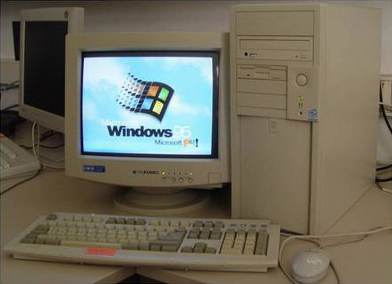

Responsive Images
von Sebastian Huber & Simon Koch

© Universal Pictures
Ein Rückblick
Früher war alles einfach ...

Heute:
Durschnittliche Größe einer Webseite*
* die keine Responsive Optimierung benutzt
1.8 MB
 Quelle: http://httparchive.org/interesting.php?a=All&l=Oct%2015%202014&s=All
Quelle: http://httparchive.org/interesting.php?a=All&l=Oct%2015%202014&s=All
72%
der responsive Websites schicken etwa
die Gleiche Datenmenge an Mobile & Desktop Nutzer
Quelle: http://www.guypo.com/?p=3374

© Universal Pictures
Es lohnt sich zu optimieren!

© Universal Pictures
Desktop: 1024x576 Pixel
264 KB
© Universal Pictures
Tablet: 768x432 Pixel
264 KB 177 KB
33% Einsparung

© Universal Pictures
Mobile: 320x180 Pixel
85% Einsparung
- Bilder werden mit unterschiedlicher Auflösung für normale und hochauflösende Displays ausgegeben
- Bilder innerhalb eines flexiblen Web-Layouts (responsive Layout) werden mit unterschiedlicher Abmessung für verschiedene Viewport-Größen ausgegeben
- spart Ressourcen (Beispiel bild.de -> 3,7 MB reine Bilder unter Desktop zu 288 kb für mobile)
- da keine unnötig großen Bilddateien geladen werden
- somit lädt die Seite schneller
eine mögliche Lösung?
adaptive-images.com
- von Matt Willcox (Filament Group)
- dieses PHP-basierte Skript liefert je nach Device das passende Bild aus
- dazu kommen bestehende Media Queries nach dem Mobile-first-Prinzip zum Einsatz
Voraussetzung für adaptive-images
- der Einsatz von PHP
- der Einsatz von Javascript
- der Einsatz einer .htaccess-Datei
- der Einsatz von Cookies
Doch nicht ganz so optimal!
© Universal Pictures
Ab sofort hilft der Browser
tdb
- srcset x
- srcset + sizes
- picture
- WebP
1. Ansatz:
Bilder für hochauflösende Displays
mit srcset x
iPhone, iPad, Android & Windows Smartphones und Tablets, Retina MacBook, 4K Monitore, Retina iMac (und viele mehr in der Zukunft).

Retina-Bild liegt in der doppelten Größe vor, der Browser skaliert es auf Normalgröße, dadurch wird es auf Retina-Displays scharf dargestellt.
Bei Retina-Bildern reicht eine niedrige JPG-Qualität aus


- Die Compressive Images Technik sorgt dafür, dass bei Retina-Bildern mehr als 50% Dateigröße eingespart werden kann
- Durch Komprimierungstools, wie ImageOptim, können zusätzlich 5 - 10% eingespart werden (auch als Grunt Plugin erhältlich)
Vorteile von srcset x
- Das Retina-Bild wird nur von Geräten mit Displays geladen, d.h. Bildschirme, die eine Pixeldichte von 2 oder höher haben
- Nativer Browser-Support:
Chrome 35, iOS 8, Chrome für Android 38, Safari 7.1 und Opera 25
= 46% weltweit*
* Quelle: http://caniuse.com/#feat=srcset
Nachteile von srcset x
- Displaygröße wird nicht berücksichtigt, sondern nur die Pixeldichte
- Smartphone und Tablet müssen ebenfalls das Desktop optimierte Bild herunterladen
- Nicht für Responsive Webseiten geeignet
Ansatz 2:
Dem Browser mehrere Bilder bereitstellen
mit srcset w

Die w Angabe weist den Browser darauf hin, in welchen Breiten das Bild zur Verfügung steht, ohne das dieser alle Varianten laden muss.
Das Attribut sizes wird zusätzlich verwendet, um dem Browser mitzuteilen, in welcher Breite das Bild auf der Seite eingesetzt wird.
Der Standardwert ist 100vw, was 100% der Viewport-Breite entspricht.
Bei
Vorteile von srcset w
- Der Browser wählt das passende Bild anhand der Breite des Viewports aus
- Auf kleineren Displays wird ein optimiertes Bild heruntergeladen
- Einsparung von Ladezeit
Nachteile von srcset w
- Nativer Browser-Support:
Momentan nur Chrome 38 und Opera 25
= 22% weltweit* - Kobination von scrset w und x nicht möglich, um Retina-Bilder mit geringer Qualität und niedriger Dateigröße auszuliefern
- Keine ideale Lösung für Retina-Geräte
* Quelle: http://caniuse.com/#feat=srcset
allgemeines zu
picturefill
- ermöglicht den Einsatz im HTML-Quelltext
- arbeitet mit div-Elementen
- bietet damit hohe Abwärtskompatibilität sowie Standardkonformität zu HTML5
- basiert auf JavaScript und ist nicht an jQuery oder eine andere Bibliothek gebunden
Das macht diese Lösung schlank und schnell – was sich auch auf die Geschwindigkeit der Website positiv auswirkt, schließlich wird picturefill im <head>-Bereich eingebunden.
Download: https://github.com/scottjehl/picturefill
- Chrome bietet in der neusten Version bereits den nativen Browsersupport.
- Die neuste Firefox Version ermöglicht dies in den Einstellungen (about:config) zu aktivieren.
weitere Quellen:
http://www.hongkiat.com/blog/serving-responsive-images/
http://blog.kulturbanause.de/2014/09/responsive-images-srcset-sizes-adaptive/